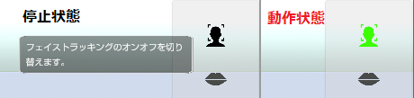

複雑な頂点構成のアバターで発生する事があるようです。
設定「システム」タブでクオリティを「Very High」以上に変更してみてください。
改善される場合があります。
ただし、処理負荷が増えるのでパフォーマンスは低下します。

※VRoid Studio でパーカーを使用している場合。
Widnows11 の新機能「スマート アプリ コントロール」が有効になっていると思われます。
無効すると改善されると思います。
※「スマート アプリ コントロール」を無効にすると
Windows を再インストールしない限り、有効には戻せませんので注意してください。
3tene および MacOS のバージョンによって対処が異なります。
Apple 公式サイト
・15.x Sequoia 以降で使用する場合は
3tene の起動をブロックされた後に「システム設定」→「プライバシーとセキュリティ」を開いて、
セキュリティの項目にある 3tene の「このまま開く」を実行して下さい。
※次回からこの操作は不要で 3tene の起動が可能となります。
・10.15.x Catalina 以降で使用する場合は
※3tene のバージョンが v1.10.28 2020/05/22 以降である必要があります。
Control キーを押しながら3teneアイコンをクリック。
メニューの「開く」を選択。表示されたダイアログでも「開く」を選択して起動する。
・10.14.x Mojave 以前
Control キーを押しながら3teneアイコンをクリック。
メニューの「開く」を選択。表示されたダイアログでも「開く」を選択して起動する。
2019/01/18 フェイストラッキングが原因の起動不具合を修正。
2019/04/12 録音機器が原因の起動不具合を修正。
最新の 3tene を試してみてください。
2019/08/09 動画保存機能が原因で強制終了される問題の対策を導入しました。
ESC キーを押しながら 3tene を起動すると動画保存機能が無効になり起動する場合があります。
起動するようになった場合は 3tene をインストールしたフォルダに
「動画無効.txt」もしくは「DisableMovie.txt」を作成すると（中身はカラでOK）
常に動画保存機能が無効になります。
動画保存を行いたい場合は別途 OBS をインストールして 3tene を録画してください。
2020/06/30 修正を行いました。
最新の 3tene を試してみてください。
もし起動中に「Initialize Setting Error !!」が表示された場合は
設定 → システム → 全設定のリセット
で全設定をクリアすると改善する場合があります。
SteamVR の動作が不安定な場合に起こる事があるようです。
SteamVR を終了し、VR 機器の接続（認識）を切った状態で起動してみてください。
右側メニューのフェイストラッキングの開始ボタンは押していますか？
動作中は緑色に変化します。
※押し忘れている場合が多いです。

また、アバターの調整で使用したいウェブカメラが指定されているかも確認してください。
確認方法はこちらを参照してください。
2020/08/04 修正を行いました。
最新の 3tene を試してみてください。
3tene が VRM の読み込みに失敗すると発生します。
VCランタイム 2015-2019 (x64) をインストールすると改善する可能性があります。
Visual C++ 再頒布可能パッケージ 2015-2019より vc_redist.x64.exe をダウンロードしてください。
USB接続のウェブカメラを使用していませんか？
前回使用していたウェブカメラを取り外している状態で 3tene を起動し、
後から前回使用していたウェブカメラを接続しても自動的には切り替わりません。
※Mac ではこれが原因で CamTwist が選択され強制終了する事があるようです。
3tene のウェブカメラ指定が変更されていないか確認してください。
アバター調整 → 設定タブ → ウェブカメラ
「フェイストラッキングの初期化に失敗しました。」と表示される場合は下記条件で失敗するようです。
※3tene のインスト－ルパスに全角文字があると失敗します。
※アカウント名に全角文字があると失敗します。
3tene の初期化パスの設定を変更すると改善する可能性があります。
3tene の設定 → システム → 初期化パスを変更してください。
※RealSense 接続前に 3tene を起動して Nuitrack を使おうとしても失敗します。
※「Logi Capture」等の仮想カメラを選択していても失敗します。
ウェブカメラの選択は[こちら]#ft_webcamera.html)を参照してください。
3tene にカメラやマイクの使用権限が無い場合に強制終了してしまいます。
また、「CamTwist」等の仮想カメラを選択していても失敗します。
Mac の「システム環境設定」を選択して、「セキュリティとプライバシー」をクリック、
「プライバシー」をクリックする。「カメラ」を選択する。
リップシンクを使う場合は「マイク」の使用も許可してください。
Windows 10 バージョン 1803 以降および Mac を使用している場合は
3teneに対してカメラ使用を許可しないとタイムアウトします。
OS のセキュリティ機能で 3tene にカメラの使用を許可してください。
Windows10 (バージョン 1803,1809) の場合
設定 → プライバシー → カメラ でアプリの設定を変更してください。
Windows10 (バージョン 1903 以降) の場合
設定 → プライバシー → カメラ でデスクトップアプリ設定（全体）を変更してください。
Mac の場合
「システム環境設定」を選択して、「セキュリティとプライバシー」をクリック、
「プライバシー」をクリックする。「カメラ」を選択する。
リップシンクを使う場合は「マイク」の使用も許可してください。
さらにセキュリティソフトをインストールしている場合には
セキュリティソフトによってカメラがガードされている場合もありますので
セキュリティソフトの設定も確認してください。
また、画面更新が停止しているウェブカメラを選択すると開始に失敗します。
対象となるカメラの画面更新が行われるようにするか、
3teneのアバターの調整「設定」で使用するウェブカメラを変更してください。
Mac のウェブカメラ起動時間は長い為、タイムアウトする事が多いようです。
3tene → アバターの調整 → 設定 で待ち時間を長く設定してください。
※最近の Mac で発生する事が多いようです。
MacBook で BootCamp を使用して起動した Windows 上の
FaceTime HD Camera は解像度の問題で使用できないようです。
下記のデバイスの組み合わせで同時使用が出来ないのを確認しています。
※ウェブカメラが標準ドライバで動作していると同時に使用できない可能性があります。
BUFFALO BSW20K07H (デバイス名：PC Camara → 標準ドライバ)
BUFFALO BSW200MBK (デバイス名：USB_Camera → 標準ドライバ)
メーカーから専用ドライバが配布されている場合はそちらを試してみてください。
ドライバの変更は自己責任となりますのでご注意ください。
ウェブカメラの同時使用についてはこちらを参照してください。
2019/03/29 顔が回転してしまう不具合を修正。
2019/08/09 再度修正を行いました。
最新の 3tene を試してみてください。
下記の２点を確認してください。
・iPhoneX と PC が同じルーターに接続されている。
・3tene (PC) セキュリティソフトでファイアウォールが適切に設定されている。
特にファイアウォールの設定を行っていないケースが多いです。
接続方法についてはこちらを参照してください。
2020/02/14 3teneFT v1.1.0 にて修正を行いました。
3tene 本体も v1.10.20 2020/02/14 以降を使用する必要があります。
数十秒待つと復帰します。
GPU 負荷で端末が一時的に停止してしまうようです。
部屋の明るさが極端に明るかったり、暗かったりすると
ウェブカメラ内蔵の補正機能が働き、性能が極端に落ちる製品があります。
明るさが一定に保てる場所に移動してみてください。
新しい Windows10 で本体のミニプラグ端子にマイクを接続して使用する場合は
マイクをミニプラグに刺していないと録音デバイスを認識しない仕様になったようです。
3tene でミニプラグ接続のマイクを使用する場合は常に接続しているようにしてください。
アバターの調整 → 設定から「リップシンク起動待ち時間」を長くしてみてください。
※最近の Mac で発生する事が多いようです。
OS (Windows,Mac) の録音機器に関連する音量やミュートの設定を確認してください。
複数の録音機器が接続されている場合には
アバターの調整 → 設定から「リップシンクの音声入力」が
使用したい録音機器になっているかを確認してください。
リップシンク稼働中に音声デバイス（マイク、スピーカー）の抜き差しを行うと、
リップシンクが停止する仕様となります。
音声デバイスの準備が完了した後にリップシンクを開始するようにしてください。
LeapMotion の動作には専用ソフトウェアのインストールが必要となります。
専用ソフトは公式サイトよりダウンロードしてください。
LeapMotion が動かない場合はソフトウェアのバージョンを確認してください。
3tene v2.0.17 以前は Orion Ver 4.0.0+52173 で動作するのを確認しています。
(3tene v2.0.17 以前は Gemini では動作しません。)
3tene v2.0.18 以降は Gemini Ver 5.2.0-1165930e で動作するのを確認しています。
(3tene v2.0.18 以降は Orion では動作しません。)
専用ソフトウェアのインストール後に 3tene を起動します。
3tene → アバターの調整 → 設定タブ → 操作方法を「LeapMotion」に変更します。
今後、修正を行う予定です。
「Visual Studio 2015 の Visual C++ 再頒布可能パッケージ」がインストールされている必要があります。
また、3teneKinect を日本語が含まれるパスに配置すると正常に動作せず、プレビューが真っ白になります。
※日本語のアカウント名を使用している場合には特に注意してください。
Kinect は USB 3.x に対応したポートに接続する必要があります。（USB 2.0 では Kinect を認識しません。）
NVIDIA 製のグラフィックボードが必要になります。（GeForce GTX 1070 など。Intel、AMD 非対応。）
別途、Axis Neuron (PRO) のインストールが必要です。
Axis Neuron を起動して設定変更を行う。
※Settingsの「Broadcating」タブを選択し、「BVH」の「Enable」を選択する。
Axis Neuron で Perception Neuron のハブに接続を行う。
Axis Neuron で Perception Neuron のキャリブレーションを行う。
Axis Neuron を起動したまま 3tene を起動します。
3tene → アバターの調整 → 設定 → 操作方法を「PerceptionNeuron」に変更します。
Perception Neuronについて
別途、SteamVR のインストールが必要です。
SteamVR のインストール後に 3tene を起動します。
3tene → アバターの調整 → 設定 → 操作方法を「VR」に変更します。
3tene → 設定 → VR → ゴーグルやトラッカーの部位設定を行います。
SteamVR が極端に古い場合はアップデートが必要です。
アップグレード版でゴーグルとリンクボックスを交換した場合は
コントローラの再ペアリングをする必要があります。
フルセット版の場合はペアリングとルームの再設定が必要です。
アクティベーションが完了していないか他のソフトと競合しています。
こちら で手順を確認してください。
仕様となります。
音声も記録したい場合は OBS の使用をお勧めします。
3tene v1.10.20 2020/02/14 以降ではウインドウキャプチャではなく
ゲームキャプチャからウインドウを指定するようにしてください。
（Mac 版はウインドウキャプチャを使用してください。）
なお、OBS との連携では仮想ウェブカメラを経由した
映像キャプチャデバイスによる使用が推奨されます。
メニューやウインドウを表示したい場合はゲームキャプチャを使用してください。
Mac 版は非対応の為、表示されません。
Steam 版で利用するには手動登録が必要となります。
3tene をインストール後にフォルダ移動した場合も動作しなくなりますので
移動後のフォルダで仮想カメラの手動登録を行ってください。
FREE と PRO を両方インストールした後に片方をアンインストールした場合も
動作しなくなりますので仮想カメラの手動登録を行ってください。
設定「システム」で「3tene ScreenCapture に出力する」が
有効になっているのを確認してください。
有効になっている場合は仮想カメラの手動登録を行ってください。
macOS Catalina (10.15.x) はセキュリティが厳しくなっていますので、
初期状態ではOBSのウインドウキャプチャが使えない場合があります。
[システム環境設定] -> [セキュリティとプライバシー] -> [プライバシー] -> [画面収録]
に OBS が無い場合、および OBS にチェック付いてない場合が該当します。
OBSで「空の名前でウインドウを表示」にチェックすると、一覧に項目が追加されます。
追加された項目を選択すると「画面収録」の許可を求められるので
許可すると一覧に 3tene が現れので選択します。
複雑な頂点構成のアバターで発生する事があるようです。
設定「システム」タブでクオリティを「Very High」以上に変更してみてください。
改善される場合があります。
ただし、処理負荷が増えるのでパフォーマンスは低下します。
※VRoid Studio でパーカーを使用している場合。
3tene では VR に対応している為、VRM は First Person に対応している必要があります。
VRM を First Person に対応させるか、「Third Person Only」に設定変更を行い、
First Person を無効にしてください。
シーンカメラがアバターに近いと発生するようです。
DirectX 11 に対応している GPU (内蔵グラフィック) だと発生しないようです。
2019/03/14 強制描画を行うオプションを追加しました。（標準でON）
最新の 3tene を試してみてください。
Intel Core 2000 番台に搭載されている GPU (内蔵グラフィック) は対象外となります。
Intel Core シリーズの内蔵グラフィックを使用する場合は 4000 番台以降が対応となります。
※MacBook (Pro, Air 含む) 2011、2012 は対象外となります。
デスクトップPCであればグラフィックボード(GPU) を追加する事で改善される可能性はありますが、
グラフィックボードの追加および交換は自己責任となります。
※DirectX 11 以降に対応したグラフィックボードを使用してください。
動作環境
仮想ウェブカメラソフトによって挙動が異なるようです。
LogiCapture の場合は 3tene で背景ウェブカメラを LogiCapture で開始した後に
本体の LogiCapture を起動すると正常表示するのを確認しています。
LogiCapture を先に起動していると黒画面になるのを確認しています。
全身トラッキング中(VR, Nuitrack, Perception Neuron)のみ動作します。
Perception Neuron の場合はアバター調整の「設定」→「全ての指を制御する」の
チェックを外していないと手の形状は変化しません。
ショートカットの注意事項
読み込みたいオブジェクトのファイルパスに日本語のフォルダが
入っていると失敗します。
日本語が含まれないパスにファイルを移動してから読み込みを行ってください。
2019/04/18 チラツキの対策を行いました。
最新の 3tene を試してみてください。